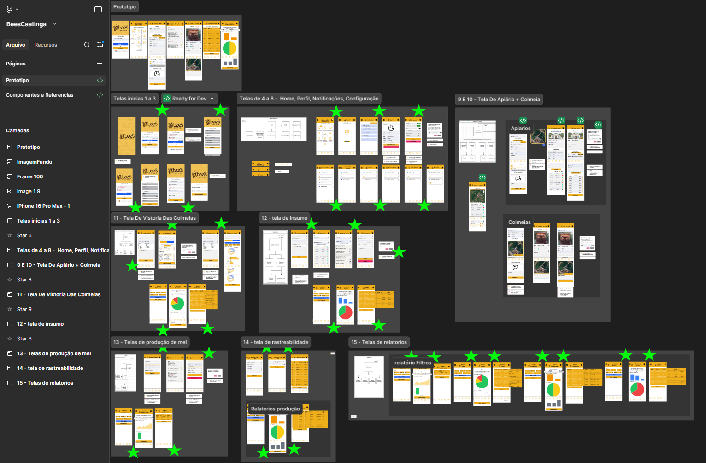
BeesCaatinga
Product Owner & UI Designer
Liderança como PO e criação das interfaces de alta fidelidade no Figma para gestão da produção de mel.
Bacharel em Sistemas de Informação pela UFPB, apaixonada por unir tecnologia, acessibilidade e sustentabilidade para criar soluções com impacto social real.
Unindo tecnologia, design e propósito para gerar impacto positivo
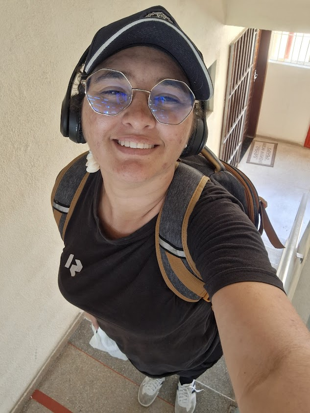
Bacharel em Sistemas de Informação pela UFPB, atuo como Product Owner e Desenvolvedora Frontend liderando projetos de tecnologia com impacto social e ambiental.
Minha paixão é unir tecnologia, acessibilidade e sustentabilidade para criar soluções que promovam inclusão e bem-estar. Com experiência multifuncional em gestão de produto, UX/UI design, análise de dados e desenvolvimento front-end.
Atuação em Gestão de Produto e Design de Interfaces (UI/UX)

Product Owner & UI Designer
Liderança como PO e criação das interfaces de alta fidelidade no Figma para gestão da produção de mel.
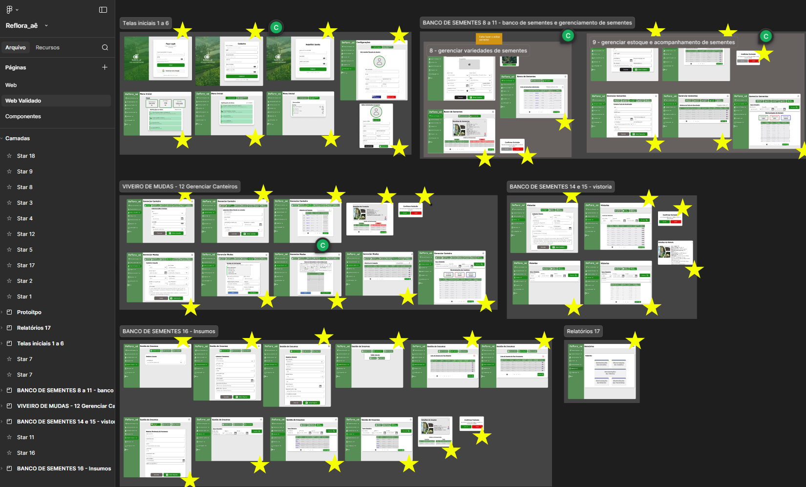
Product Owner & UI Designer
Definição de requisitos e prototipagem das telas de gestão de sementes e viveiros para Tecnologia Cidadã.
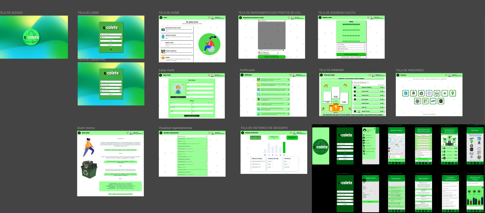
UI/UX Designer
Design de interfaces para aplicativo de gestão de coleta seletiva e reciclagem com foco UX.
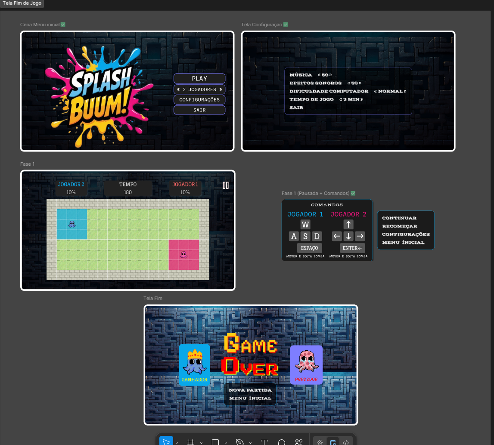
Game UI Designer
Criação de HUD, menus e assets visuais para jogo 2D desenvolvido na disciplina de Sistemas Multimídia.
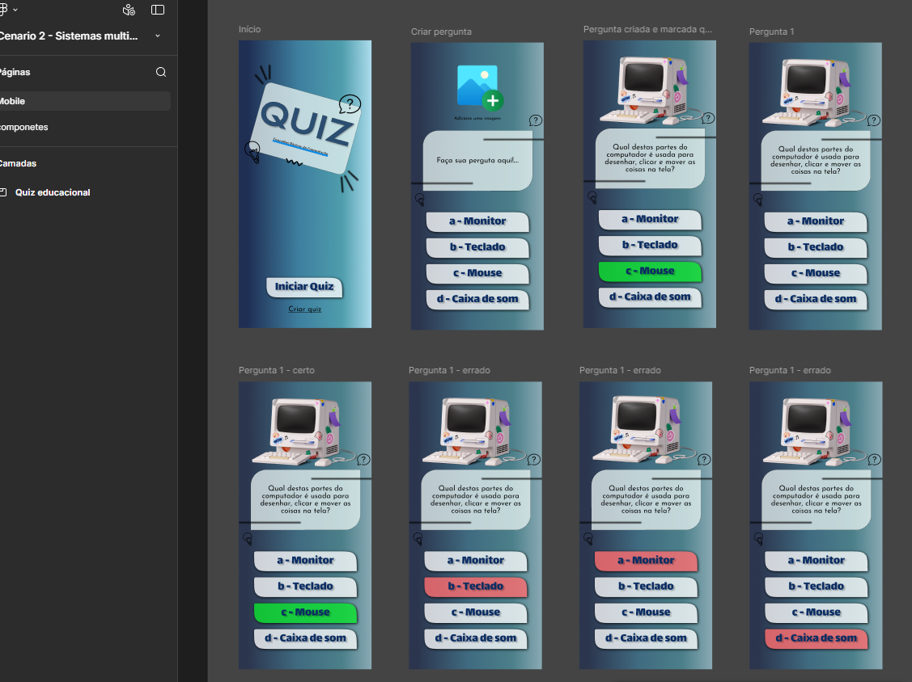
UI Designer
Prototipagem de aplicativo educacional interativo para ensino de hardware com foco em acessibilidade.

Ex-CEO & Idealizadora
Liderança em plataforma digital para artesãos locais com desenvolvimento do negócio e pitch.
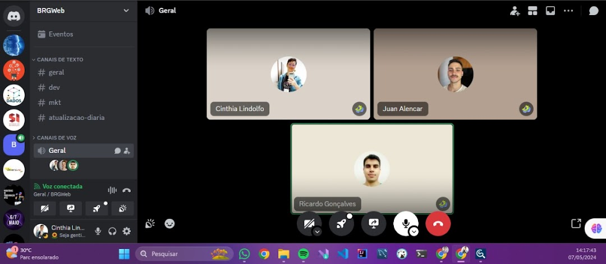
Product Owner & Gerente
Definição da visão estratégica, coordenação de equipes multidisciplinares e gestão com foco em eficiência.
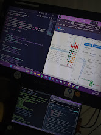
Analista de Dados
Análise e visualização de dados públicos com Power BI para subsidiar decisões em projetos sociais.
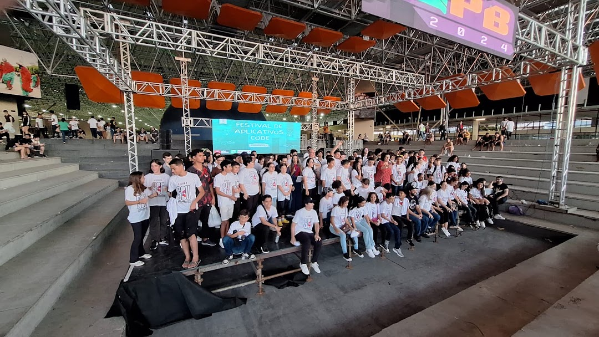
Tutora – FUNETEC-PB
Facilitação do aprendizado de programação (MIT App Inventor) e pensamento computacional.
Ferramentas, metodologias e formações que utilizo no dia a dia
Expandindo horizontes: tecnologia aplicada à gestão ambiental e social
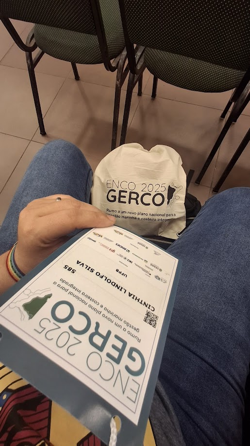
Ouvinte - ENCO GERCO 2025
Tecnologia & Gestão Costeira

Expositora - SNCT
Ciência e Tecnologia
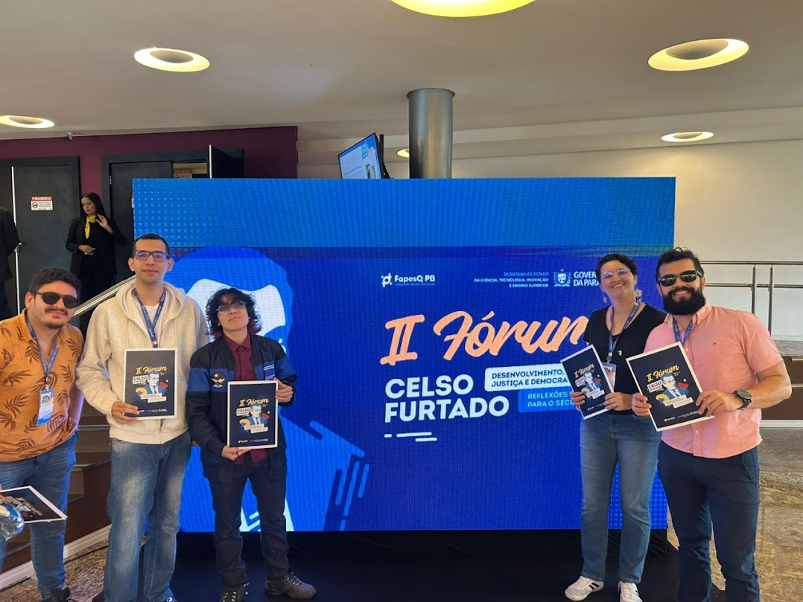
Expositora - Fórum Celso Furtado
BeesCaatinga
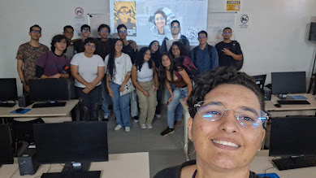
R.Tech - Relato de Experiência
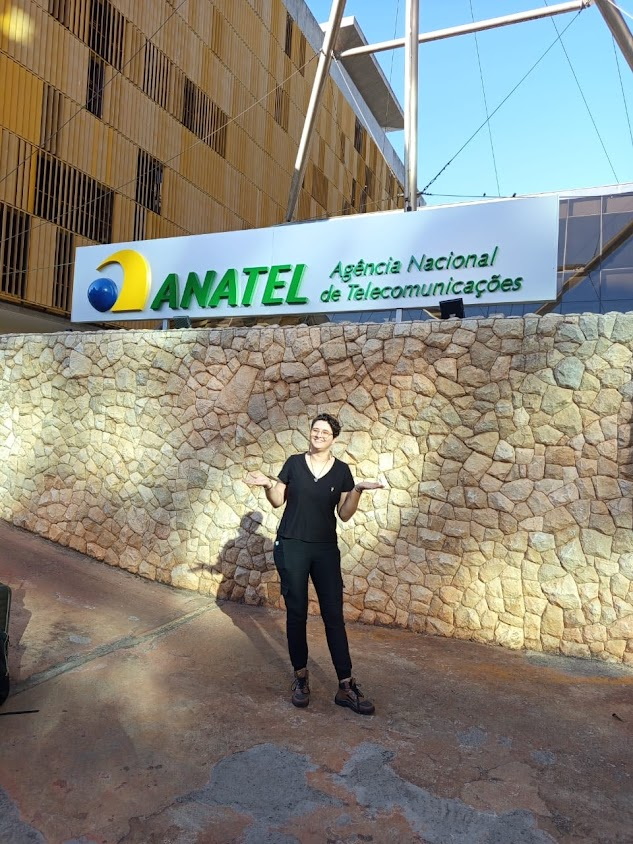
Intercâmbio DF
Ceadi/P@edi
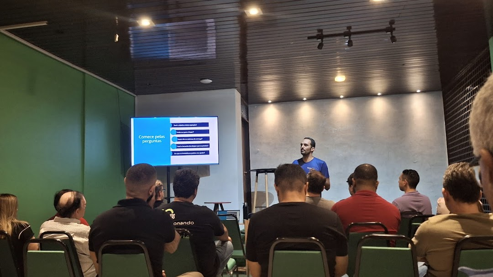
Networking - Eventos Tech
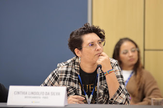
Intercâmbio DF - Vivência
Pitch - PTHI/SECTIES
Minha jornada é movida pela curiosidade de entender diferentes ecossistemas. Seja na Caatinga ou na Zona Costeira, busco oportunidades onde a tecnologia possa ser uma ferramenta de preservação e desenvolvimento sustentável.
Conquistas que validam o impacto e a dedicação nos projetos
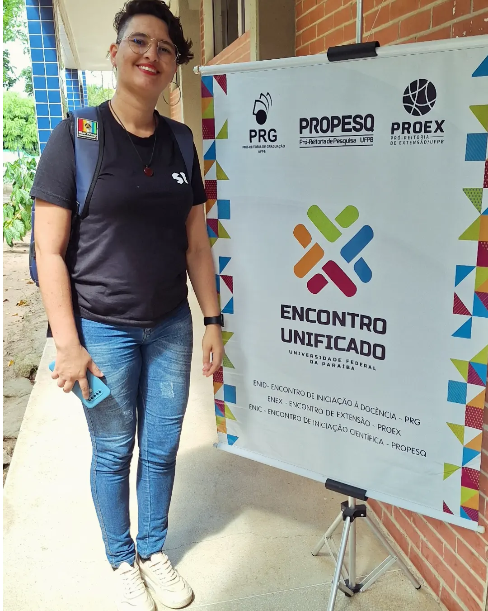
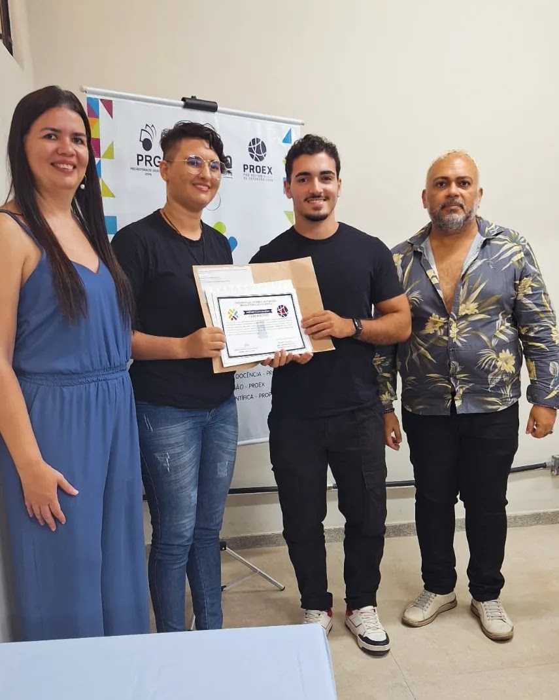
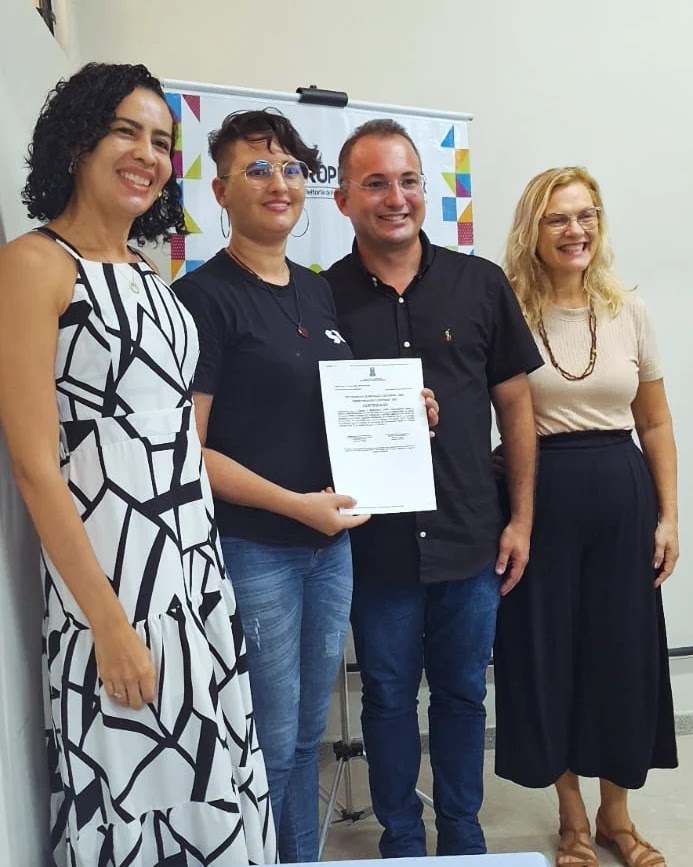
Estou sempre aberta a novos desafios, parcerias e projetos com propósito